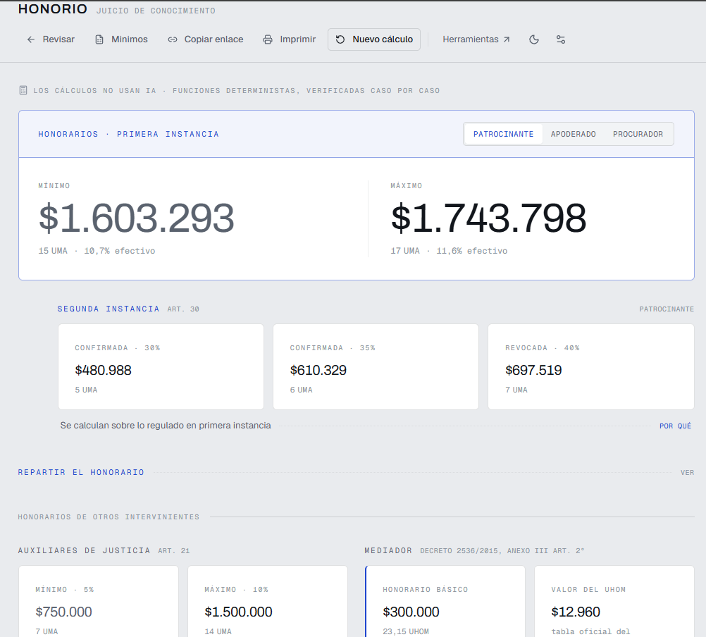
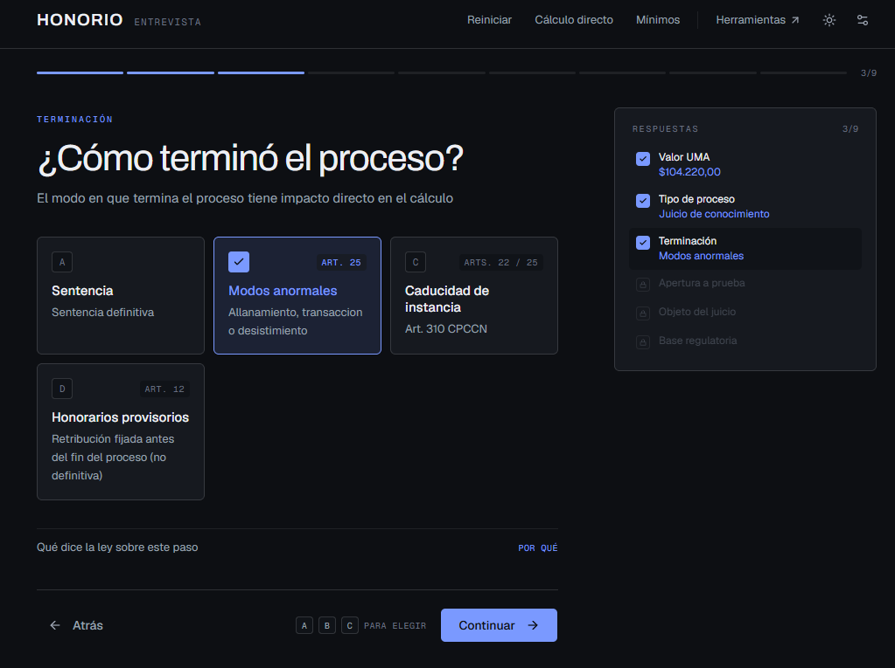

Software para lo que se hace todos los días en el fuero: computar plazos, regular honorarios, liquidar la tasa. Cada herramienta salió de un problema concreto de trabajo, no de una idea de producto.
Abogado. Prosecretario Administrativo en un juzgado civil.
Asistente para la regulación de honorarios de la Ley 27.423.
No es una caja negra a propósito. La ley es ambigua en varios puntos y la jurisprudencia está dispersa: donde la app adopta un criterio interpretativo, lo declara junto al número, detrás de un «por qué». Quien no quiere leerlo no lo lee; quien tiene que fundar una regulación lo tiene ahí.


Cada una es un archivo, sin instalación y sin servidor: todo se calcula en el navegador y nada de lo que escribís sale de tu máquina.
Un cálculo de honorarios puede terminar fundando una resolución judicial y una fecha mal computada hace perder un derecho. De eso se derivan las reglas con las que se trabaja acá.
Suites que comparan la salida del motor contra casos conocidos, una por concern: escala del art. 21, reducciones de base, de escala y finales, segunda instancia, partidor, provisorios, procesos generales y especiales, exhorto e incidente.
Una de ellas barre los 25.600 recorridos posibles de la entrevista. No son decorativas: son lo que impide que un cambio de interfaz mueva un número.
for f in lib/legal/__tests__/*.validation.ts do npx tsx "$f"; done
Toda la aritmética y todas las reglas de la ley viven en
lib/legal/, que no conoce React ni el DOM. El schema define
qué se pregunta, la orquestación navega y los componentes solo dibujan.
Ninguna de esas tres capas puede decidir nada jurídico.
El motor tiene un punto de entrada único y es una función pura: mismo estado, mismo resultado. Devuelve el cálculo y la lista de transformaciones que lo produjeron, que es lo que la app muestra como cadena.
Los resultados vigentes se consideran correctos y son la referencia a preservar. Un refactor que mejora el código y cambia un número no es un refactor: es un error.
Cuando un número tiene que cambiar, se anota con el caso concreto y el artículo que lo funda, aunque el diff sea de una línea. Por eso el registro de versiones se numera según qué le pasó al número, no según cuánto código se tocó: un cálculo de hoy tiene que poder reproducirse dentro de dos años.
Abogado. Prosecretario Administrativo en un juzgado civil. Estas herramientas salieron de resolver, durante años, los mismos cálculos que ahora hacen ellas.
El código está escrito con asistencia de modelos de lenguaje. No hay razón para esconderlo y tampoco mucho mérito en negarlo: hoy cualquiera genera una calculadora.
Lo que un modelo no genera es el criterio. Un ejemplo real, de agosto de 2026: el motor aplicaba la reducción del art. 25 también cuando la caducidad se resolvía por art. 22, acumulando dos quitas sobre el mismo hecho. Nada en el código lo delataba y el resultado parecía razonable. Está mal porque los dos criterios de la caducidad son alternativos: elegido el art. 22, la instancia cae como demanda desestimada y el momento de la apertura a prueba deja de jugar. Esa corrección no sale de leer la ley con más atención; sale de haber resuelto el caso.
Por eso el trabajo está en dos lugares que no son el código: decidir qué hace la herramienta donde la ley no es clara —y dejar escrito por qué— y verificar que el número sea el correcto. Lo primero está en la documentación de dominio; lo segundo, en las validaciones de arriba.
Estas herramientas son de carácter referencial y orientativo. No sustituyen el criterio del juez natural de la causa ni constituyen asesoramiento legal. Quien las usa es responsable de verificar el resultado antes de darle efecto.
Honorio, en particular, no aplica los mínimos arancelarios automáticamente: si el cálculo cae por debajo de un mínimo que corresponde, hay que desestimarlo. Por eso la tabla de mínimos está a un clic dentro de la app.
| Todo el repositorio | MIT |
| Honorio | AGPL-3.0-or-later |
Las calculadoras son aritmética sobre reglas explícitas: usalas, copialas, vendelas si querés. Honorio va bajo AGPL porque lo que hay en su motor no es aritmética, son los criterios para resolver los puntos donde la ley es ambigua. La AGPL no prohíbe el uso comercial: exige que quien la modifique y la ofrezca a terceros publique su versión bajo la misma licencia. La app es y va a seguir siendo gratuita.